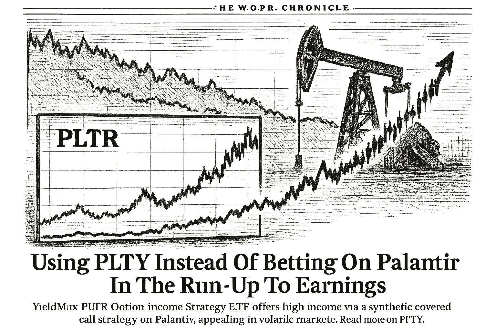

SPY
Current: $753.99Change: -15.67 (-2.04%)
Updated:
Source: yahoo_chartFreshness: fresh


The Dow Jones index drops on Election Day, as Apple stock and Palantir tumble on earnings.

Today's Headline: Stock Market Today: Dow Slides On Election Day; Apple, Palantir Dive On Earnings (Live Coverage)
Setup: The Dow Jones index drops on Election Day, as Apple stock and Palantir tumble on earnings.
Primary Topic: Palantir Technologies (PLTR)
Specific Development: Palantir reported its tenth consecutive earnings beat, raising its full-year outlook, yet the stock fell by 6% following the announcement.
Why Today Is Different: The market is reacting negatively to earnings despite positive results, indicating broader investor concerns amidst election day volatility.
Secondary Topics: U.S. equities; Earnings reports; Market volatility
Tone: cautious
Sectors: Technology
Companies: Palantir Technologies
Countries Or Regions: United States
Macro Themes: Earnings season; Market sentiment
Why This Story: Palantir's performance reflects investor sentiment and market dynamics on a significant day for U.S. equities.
Why This Matters: Palantir's earnings performance is a bellwether for investor sentiment in a volatile market environment.

Summary: U.S. equities are under pressure as the Dow, S&P 500, and Nasdaq futures decline amid mixed earnings reports and geopolitical tensions.
What Happened Overnight: Major indices fell, with the Dow down 1.41%, S&P 500 down 2.04%, and Nasdaq down 4.96%.
What Changed Materially: Palantir's earnings report failed to boost its stock, reflecting broader market concerns.
Which Assets Sectors Are Affected: Technology; Energy; Consumer Discretionary
Does It Look Like Noise Or A Real Regime Input: This appears to be a real regime input given the significant market reactions.
Why This Matters: The decline in major indices indicates a potential shift in market sentiment, impacting investment strategies.
ANGX Earnings Expectations — 2026-11-10, Time Unavailable
Consensus EPS: $-0.07
Year-ago EPS: unavailable
Expected EPS growth: unavailable
Consensus revenue: $143.2M
Year-ago revenue: unavailable
Expected revenue growth: unavailable
Source: finnhub_earnings_calendar · As of: 2026-11-03T15:15:05.649025+00:00 · Freshness: current
QBTS Earnings Expectations — 2026-11-10, Time Unavailable
Consensus EPS: $-0.10
Year-ago EPS: unavailable
Expected EPS growth: unavailable
Consensus revenue: $4.4M
Year-ago revenue: unavailable
Expected revenue growth: unavailable
Source: finnhub_earnings_calendar · As of: 2026-11-03T15:15:05.649025+00:00 · Freshness: current
QBTS Earnings Expectations — 2026-11-02, Time Unavailable
Consensus EPS: $-0.10
Year-ago EPS: unavailable
Expected EPS growth: unavailable
Consensus revenue: $4.4M
Year-ago revenue: unavailable
Expected revenue growth: unavailable
Source: finnhub_earnings_calendar · As of: 2026-11-03T15:15:05.649025+00:00 · Freshness: current

- WOPR learning pipeline: Collecting samples
- Candidates evaluated 24h: 0
- Current gate: Evidence
- Notification ledger events in 24h: 3
- Pending orders created/canceled/filled/expired: 1/0/0/0
- Pending lifecycle interpretation: Pending-order cancellations have trackable reasons and no obvious rapid churn pattern.
- Portfolio risk: Label: High / Score: 100.0
- Latest intelligence gap report: intelligence_gap_report_2026-11-01.pdf
Why This Matters: The active gate is Evidence, so the key question is why candidates are stopping before approval, not how to force trades.

- Sentinel role: infrastructure and operational status only.
- State: ONLINE
- Last successful validation: 2026-11-03T15:14:22.912221+00:00
- Payloads accepted/rejected: 31970/0
- Node health score: 100
Why This Matters: Sentinel is ONLINE, so Joshua should use its context only to the extent the latest accepted pulse is fresh and authenticated.

CANDIDATES MOVING THROUGH JOSHUA'S INVESTMENT-REVIEW WORKFLOW
FROZEN DAILY BRIEF SNAPSHOT | 2026-11-03T15:12:22.704637+00:00
QUEUE SUMMARY | Investment Ready: 0 | Waiting for Price: 0 | Waiting for Evidence: 1 | Research Underway: 2 | Governance Hold: 5 | Monitor Only: 0
Investment-ready status: No candidates are currently Investment Ready.
#7 AVGO - Governance Hold [Moved Down 5->7]
Joshua's Thesis: Positive thesis not yet established.
Why Waiting: Governance gate has not cleared.
Price: 333.12 now; 357.70 preferred entry
What Unlocks It: Governance gate clears; Clear valuation support; Evidence that the business quality matches the risk being taken
Portfolio Fit: 0.0/100 — VERY LOW
Portfolio Fit Drivers: projected Technology exposure 80.0%; projected AI infrastructure exposure 80.0%; candidate amount $100 vs $25 currently allocated
Candidate Risk: 100.0/100 — VERY HIGH ↑
Risk Drivers: projected Technology exposure 80.0%; projected AI infrastructure exposure 80.0%; candidate amount $100 vs $25 currently allocated
Next: Re-evaluate after the recorded gate clears. Owner: Columbo.
#10 NVDA - Waiting for Evidence [Moved Down 7->10]
Joshua's Thesis: Positive thesis not yet established.
Why Waiting: Positioning gate failed.
Price: 208.29 now; 213.27 preferred entry
What Unlocks It: Clear valuation support; Evidence that the business quality matches the risk being taken; Independent evidence streams pointing the same way
Portfolio Fit: 0.0/100 — VERY LOW
Portfolio Fit Drivers: projected Technology exposure 80.0%; projected AI infrastructure exposure 80.0%; candidate amount $100 vs $25 currently allocated
Candidate Risk: 100.0/100 — VERY HIGH ↑
Risk Drivers: projected Technology exposure 80.0%; projected AI infrastructure exposure 80.0%; candidate amount $100 vs $25 currently allocated
Next: Positioning status must no longer be warning. Owner: Joshua.
#11 QBTS - Governance Hold [Moved Down 8->11]
Joshua's Thesis: Positive thesis not yet established.
Why Waiting: Governance gate has not cleared.
Price: 10.45 now; 17.52 preferred entry
What Unlocks It: Governance gate clears; Clear valuation support; Evidence that the business quality matches the risk being taken
Portfolio Fit: 0.0/100 — VERY LOW
Portfolio Fit Drivers: projected Unclassified exposure 80.0%; projected Unclassified exposure 80.0%; candidate amount $100 vs $25 currently allocated
Candidate Risk: 100.0/100 — VERY HIGH ↑
Risk Drivers: projected Unclassified exposure 80.0%; projected Unclassified exposure 80.0%; candidate amount $100 vs $25 currently allocated
Next: Re-evaluate after the recorded gate clears. Owner: Joshua.
#15 XRAY - Research Underway [Moved Down 13->15]
Joshua's Thesis: Positive thesis not yet established.
Why Waiting: Research evidence is still being gathered.
Price: 9.85 now; 9.29 preferred entry
What Unlocks It: Clear valuation support; Evidence that the business quality matches the risk being taken; Independent evidence streams pointing the same way
Portfolio Fit: 0.0/100 — VERY LOW
Portfolio Fit Drivers: projected Unclassified exposure 80.0%; projected Unclassified exposure 80.0%; candidate amount $100 vs $25 currently allocated
Candidate Risk: 100.0/100 — VERY HIGH ↑
Risk Drivers: projected Unclassified exposure 80.0%; projected Unclassified exposure 80.0%; candidate amount $100 vs $25 currently allocated
Next: DCA spacing and exposure policy satisfied. Owner: Columbo.
#19 RCL - Governance Hold [Moved Down 14->19]
Joshua's Thesis: Positive thesis not yet established.
Why Waiting: Governance gate has not cleared.
Price: 314.67 now; 287.72 preferred entry
What Unlocks It: Governance gate clears; Clear valuation support; Evidence that the business quality matches the risk being taken
Portfolio Fit: 0.0/100 — VERY LOW
Portfolio Fit Drivers: projected Unclassified exposure 80.0%; projected Unclassified exposure 80.0%; candidate amount $100 vs $25 currently allocated
Candidate Risk: 100.0/100 — VERY HIGH ↑
Risk Drivers: projected Unclassified exposure 80.0%; projected Unclassified exposure 80.0%; candidate amount $100 vs $25 currently allocated
Next: Re-evaluate after the recorded gate clears. Owner: Columbo.
#21 PLTR - Governance Hold [Moved Down 16->21]
Joshua's Thesis: Positive thesis not yet established.
Why Waiting: Governance gate has not cleared.
Price: 170.51 now; 196.14 preferred entry
What Unlocks It: Governance gate clears; Clear valuation support; Evidence that the business quality matches the risk being taken
Portfolio Fit: 0.0/100 — VERY LOW
Portfolio Fit Drivers: projected Technology exposure 80.0%; projected AI software exposure 80.0%; candidate amount $100 vs $25 currently allocated
Candidate Risk: 100.0/100 — VERY HIGH ↑
Risk Drivers: projected Technology exposure 80.0%; projected AI software exposure 80.0%; candidate amount $100 vs $25 currently allocated
Next: Re-evaluate after the recorded gate clears. Owner: Columbo.
#22 ANGX - Governance Hold [Moved Down 18->22]
Joshua's Thesis: Positive thesis not yet established.
Why Waiting: Governance gate has not cleared.
Price: 3.46 now; 3.48 preferred entry
What Unlocks It: Governance gate clears; Clear valuation support; Evidence that the business quality matches the risk being taken
Portfolio Fit: 0.0/100 — VERY LOW
Portfolio Fit Drivers: projected Unclassified exposure 80.0%; projected Unclassified exposure 80.0%; candidate amount $100 vs $25 currently allocated
Candidate Risk: 100.0/100 — VERY HIGH ↑
Risk Drivers: projected Unclassified exposure 80.0%; projected Unclassified exposure 80.0%; candidate amount $100 vs $25 currently allocated
Next: Re-evaluate after the recorded gate clears. Owner: Advisory Committee.
#24 DIA - Research Underway [Moved Down 21->24]
Joshua's Thesis: Positive thesis not yet established.
Why Waiting: Research evidence is still being gathered.
Price: Current price unavailable.; Preferred entry not established.
What Unlocks It: Clear valuation support; Evidence that the business quality matches the risk being taken; Independent evidence streams pointing the same way
Portfolio Fit: 0.0/100 — VERY LOW
Portfolio Fit Drivers: projected ETF exposure 80.0%; projected Broad market exposure 80.0%; candidate amount $100 vs $25 currently allocated
Candidate Risk: 100.0/100 — VERY HIGH ↑
Risk Drivers: projected ETF exposure 80.0%; projected Broad market exposure 80.0%; candidate amount $100 vs $25 currently allocated
Next: Clear valuation support; Evidence that the business quality matches the risk being taken; Independent evidence streams pointing the same way. Owner: Columbo.
Since the prior Chronicle: IONQ - Removed; SPCX - Removed; UUUU - Removed
Observation only. This section creates no recommendation, order, authority, or execution instruction.

- Which recorded governance requirement must clear before AVGO can advance?
- If NVDA reaches the recorded price condition <= 213.27, which recorded evidence and governance requirements would still remain?
- Which recorded governance requirement must clear before QBTS can advance?
- If XRAY reaches the recorded price condition <= 9.29, which recorded evidence and governance requirements would still remain?
- What ANGX EPS or revenue result would materially change the current recorded thesis?

Palantir's earnings report highlights a disconnect between company performance and market sentiment, reflecting broader concerns about economic conditions and investor confidence. The significant drop in its stock price despite positive results suggests that external factors are heavily influencing market dynamics. As the market navigates election day volatility, understanding these trends will be crucial for investment strategies.

Compared to: 2026-11-02
- Market weather: Still Balanced
- Top opportunity: Still DELL
- Joshua gate: Still Evidence
- 2Y Treasury.last_price: 4.56 -> 4.59 (up); 2Y Treasury.last_price changed 0.66% versus the prior frozen Chronicle snapshot.
- 2Y Treasury.percent_change: -1.084598698481577 -> 0.6578947368421107 (up); 2Y Treasury.percent_change changed 160.66% versus the prior frozen Chronicle snapshot.
- 10Y Treasury.last_price: 4.94 -> 4.91 (down); 10Y Treasury.last_price changed 0.61% versus the prior frozen Chronicle snapshot.
- 10Y Treasury.percent_change: -0.8032128514056232 -> -0.6072874493927175 (up); 10Y Treasury.percent_change changed 24.39% versus the prior frozen Chronicle snapshot.
- 30Y Treasury.last_price: 5.31 -> 5.28 (down); 30Y Treasury.last_price changed 0.56% versus the prior frozen Chronicle snapshot.
- 30Y Treasury.percent_change: -0.18796992481204275 -> -0.5649717514124174 (down); 30Y Treasury.percent_change changed 200.56% versus the prior frozen Chronicle snapshot.
- SPY.last_price: 761.59 -> 753.985 (down); SPY.last_price changed 1.00% versus the prior frozen Chronicle snapshot.
- SPY.percent_change: -0.49387877758469406 -> -2.036613569628142 (down); SPY.percent_change changed 312.37% versus the prior frozen Chronicle snapshot.
- QQQ.last_price: 696.32 -> 685.44 (down); QQQ.last_price changed 1.56% versus the prior frozen Chronicle snapshot.
- QQQ.percent_change: -2.229710755405784 -> -4.964991334488728 (down); QQQ.percent_change changed 122.67% versus the prior frozen Chronicle snapshot.
- IWM.last_price: 282.54 -> 280.64 (down); IWM.last_price changed 0.67% versus the prior frozen Chronicle snapshot.
- IWM.percent_change: 2.0036824434095135 -> 0.1641801698907772 (down); IWM.percent_change changed 91.81% versus the prior frozen Chronicle snapshot.

The significant drop in Palantir's stock after a positive earnings report indicates a shift in market sentiment that warrants close monitoring.
No new warnings issued; however, market volatility remains a concern.
Portfolio Construction Review
Current allocation: 25.0 allocated.
Largest sector: Industrials at 100.0%.
Largest theme: Economic cycle at 100.0%.
Diversification: Concentrated (0.0).
Cash allocation: 97.5% unallocated.
Recommended exposure: DELL at portfolio-fit score 0.0.
Portfolio fit: DELL has a mixed portfolio fit; the diversification improvement is not decisive yet.
Why This Matters: Portfolio Manager evaluates whether an opportunity improves this portfolio; it does not select the investment, vote, or authorize execution.

Today, the evidence gate matters more than the ticker list; Evidence is where Joshua's attention belongs.

| Can trigger trade | no |
| Can modify trade rules | no |
| Can add watch items | yes |
| Can add review questions | yes |
| Can adjust confidence notes | yes |
| Input policy | external_intelligence_plus_sanitized_internal_observations |
| External policy | The Editor-in-Chief synthesizes current world/market context where available and labels unknowns; provider/model provenance remains separate. |
| Internal policy | Joshua/WOPR/Sentinel facts are supplied as sanitized observation-only summaries. |
| Editorial model | gpt-4o-mini |
- Selected by a deterministic daily rotation through symbols already present in the persisted Chronicle snapshot.
- Next earnings: November 10, 2026 (time unknown); status: scheduled.
- Source: finnhub_earnings_calendar.
- Options traders are getting anxious on Palantir and Apple ahead of earnings
- Desk: earnings; source: CNBC; linked symbols: none recorded.
- Published: 11/2/26 11:16 MST.
- High-impact watch: FOMC Minutes Meeting of October 27-28 - 11/18/26 12:00 MST.
- Affected assets: US equities, Treasuries, USD; source: federal_reserve_calendar.
- QBTS earnings: November 2, 2026, time unknown.
- PLTR earnings: November 2, 2026, time unknown.
- ANGX earnings: November 10, 2026, time unknown.
- Health Care: 3.28% session performance; source: persisted sector ledger.
- Consumer Staples: 2.51% session performance; source: persisted sector ledger.
- Real Estate: 2.45% session performance; source: persisted sector ledger.
- QQQ: -4.96% recorded move; price: 685.44.
- Session: regular; catalyst status: possible; source: yahoo_chart.
- Palantir Technologies (PLTR); why it matters: The stock's reaction to earnings could set a precedent for other tech stocks.
- State: broad_strength; score: 75.90/100; advance/decline ratio: 1.77.
- Above 50-day average: 62.20%; sample: 119; provider: sentinel_sampled_breadth.
- Decision outcomes evaluated: 16; currently untestable: 0.
- Warning review: still watching 2, unconfirmed 1; confidence calibration: insufficient_sample.
- Current macro regime: defensive_rotation; change probability: unavailable.
- Risk dashboard: neutral (52/100); breadth: broad_strength; sentiment: neutral.
- Scenario board only - a current-state observation, not a forecast or execution instruction.

- Produced a celebrated record managing Fidelity Magellan and taught generations of individuals how to research understandable growth companies.
- Published quotation: "The person that turns over the most rocks wins the game."
- Published framework: Start with companies you can understand, then verify the story through earnings, balance-sheet strength, valuation, competitive position, and a clearly stated reason the opportunity may be mispriced.
- Committee lens: Lynch asks Joshua for a plain-language company story and the fundamental evidence behind it, connecting real-world observation to valuation rather than to hype.
- Public philosophy profile only; no participation, endorsement, or current recommendation is implied.
- If XRAY reaches the recorded price condition <= 9.29, which recorded evidence and governance requirements would still remain?
- DELL: No canonical symbol-specific material event is linked.
- Attach the missing DELL evidence before the next committee review.
- Which recorded governance requirement must clear before AVGO can advance?
- If NVDA reaches the recorded price condition <= 213.27, which recorded evidence and governance requirements would still remain?
- Which recorded governance requirement must clear before QBTS can advance?
- If XRAY reaches the recorded price condition <= 9.29, which recorded evidence and governance requirements would still remain?
- Evidence agenda: DELL - No canonical symbol-specific material event is linked.
- Proposed review: Market Volatility (VIX); why it matters: Increased volatility can impact investment strategies across sectors.
- Proposed review: Oil Prices (WTI and Brent); why it matters: Fluctuations in oil prices can affect inflation and economic outlook.
- Canonical instruments reviewed: 24; delayed 6, fresh 18.
- Leading sources: yahoo_chart (21), treasury_official_yield_curve (3).
- Snapshot recorded: 11/3/26 08:15 MST.
Stock Market Today: Dow Slides On Election Day; Apple, Palantir Dive On Earnings (Live Coverage)
Storm meter: Elevated
#7 AVGO - Governance Hold [Moved Down 5->7]
Observation mode: observation_only
Watch: Palantir Technologies (PLTR); why it matters: The stock's reaction to earnings could set a precedent for other tech stocks.
Question: Which recorded governance requirement must clear before AVGO can advance?